Os Inpactos de não reciclar!
Poluição do ar; poluição das águas; poluição do solo; poluição dos alimentos; po- luição dos lençóis d'água; proliferação de diversas espécies de animais vetores ou trans- missores de doenças.

Consequências graves da falta de reciclagem: